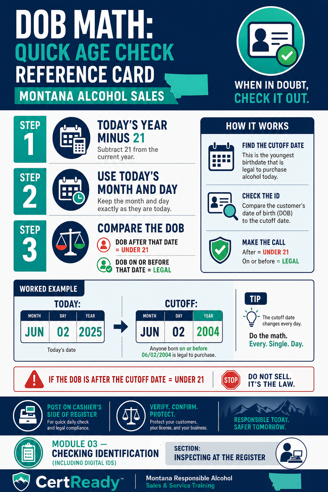
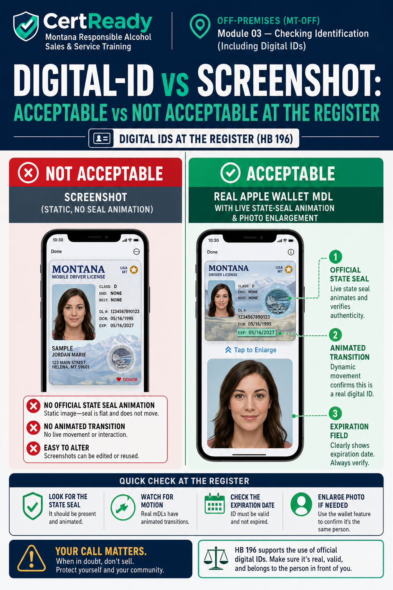

Checking Identification (Including Digital IDs)
Montana's open acceptable-ID standard per ARM 42.13.901(1), including HB 196 digital IDs and tribal IDs - register edition
What you'll learn
- K5: Acceptable forms of ID per ARM 42.13.901(1)
- K6: Underage strategies in off-premise retail
- P1: Verify a Montana ID at the register, including digital
- P2: Calculate latest legal DOB
Montana ARM 42.13.901(1) sets an open standard for ID. Accept any government-issued ID that (1) has a photo, (2) has a date of birth, and (3) is not altered or manipulated, and use it to confirm the customer is 21+. The Montana DOR “IDs for Purchasing Alcoholic Beverages” fact sheet says the same.
It is not a fixed list - the test is a real, unaltered government ID with a photo and date of birth.
Common examples of acceptable ID (ARM 42.13.901(1))
- Driver's license or state ID card from any US state or Canadian province - it does not have to be unexpired
- Military / armed-services ID card - active duty, reserve, retired, or dependent (DoD-issued)
- US or foreign passport, or US passport card - the wallet-sized passport card is fully acceptable
- Montana temporary or probationary driver's license / ID - the paper interim issued while the permanent card is mailed
- Tribal ID from any federally recognized tribe - Montana or out-of-state
- US permanent resident card (Form I-551 / 'green card') - a federally issued credential with a photo and date of birth
- Government-certified digital ID - added by HB 196, effective October 1, 2025 (presented through an official wallet or the state app, not a screenshot)
- Other government-issued photo IDs with a date of birth that are not altered are also acceptable - e.g., a foreign government ID, a state (public) college/university ID, or a Montana medical marijuana ID card. The test is government-issued + photo + date of birth + not altered.
![Acceptable-ID poster optimized for register/cashier reference (ARM 42.13.901(1) - OPEN standard, examples not a closed list). Header: 'Acceptable = ANY government-issued ID with a photo + date of birth, not altered. Confirm 21+.' Example thumbnails: state/Canadian/foreign DL or ID, military (DoD) ID, US/foreign passport or US passport card, Montana temporary/probationary DL or ID, tribal ID from ANY federally recognized tribe (Montana or out-of-state), US permanent resident card, state college/university ID, Montana medical marijuana ID card, government-certified digital ID. Footer: 'Expired is OK. No photo or no date of birth = can't verify age = refuse or ask for another ID.' Brand colors. Often printed and posted next to the register.](../../img/MT-ALCOHOL-OFFSALE-M03-s1-c2.png)
Tribal IDs are acceptable from any federally recognized tribe - Montana or out-of-state. Montana's seven federally recognized tribes include: • Blackfeet Nation • Chippewa Cree (Rocky Boy's) • Confederated Salish & Kootenai (Flathead) • Crow • Fort Belknap (Assiniboine & Gros Ventre) • Fort Peck (Assiniboine & Sioux) • Northern Cheyenne You are not limited to these. A photo ID from any federally recognized tribe (including out-of-state tribes) is acceptable under ARM 42.13.901(1) - confirm the photo, date of birth, and that the card is not altered.
NOT acceptable (fails the government-issued + photo + date-of-birth + not-altered test): • A photocopy, photo, or screenshot of an ID (you need the actual credential) • No photo (library cards, voter-registration cards, birth certificates) • No date of birth (most warehouse-club cards like Costco or Sam's) • Private (non-government) IDs, e.g. private-club or private-school cards • An ID that is altered, tampered with, or does not match the person An expired government ID is not disqualified by expiration alone. “It's all I have” is not a reason to accept something that fails the test - ask for another ID or refuse.
The check sequence
- Take it in your hand. Don't read it through a wallet or phone case. You need to feel the card.
- Photo matches. Compare hairline, ear shape, eye spacing, and jaw to the picture. Hair color/style change; bone structure doesn't.
- Calculate the DOB. Today minus 21 years is the line. If the DOB is later, refuse.
- Don't refuse just because it's expired. Montana has no “unexpired” requirement. Confirm the photo, read the date of birth for 21+, and check the card isn't altered.
- Feel the card. Real cards have uniform thickness, sharp corners, no peeling lamination, no bubbles.
- Tilt it. Holographic state seal should shift in the light. Flat / printed-on holograms are a fake-ID tell.
- Cross-check with a question if anything feels off: "What's your zip code?" should be instant for a real owner.
DOB math, made easy. • Subtract 21 from the current year • Use today's month and day • Anyone whose DOB is after that date is under 21 Example for May 8, 2026: cutoff is May 8, 2005. Born May 8, 2005 or earlier = legal. Born May 9, 2005 or later = under 21.

The vertical-vs-horizontal layout tell. Most US states issue licenses in horizontal layout for adults (21+) and vertical layout for minors (under 21). A vertical license = check the DOB even more carefully. A horizontal license held by someone who looks young still gets the full inspection - but a vertical license should never be cleared without confirming the customer crossed 21 since the card was issued.
Out-of-state IDs at a Montana register. Montana borders four states (Wyoming, Idaho, North Dakota, South Dakota) and is one province from Canadian travelers (Alberta, Saskatchewan, British Columbia). At a typical Montana register, you'll see out-of-state US driver's licenses on roughly one in five transactions and Canadian licenses on ski-resort weekends and during summer through Glacier and Yellowstone. Every one of them is acceptable under ARM 42.13.901(1) (expired is OK) - but every one of them looks different from a Montana DL, so the fake-ID tells are different too.
The single best protection is to spend 30 seconds the next time someone hands you a license from a state you've never seen, and compare it to a known real one. State DMV websites publish public reference images of their license designs; many cashiers print one for each neighboring state and tape them inside the register drawer. The three out-of-state features that catch most fakes: the hologram (does it shift in the light, or is it flat ink), the bottom-edge laminate (real cards have a continuous strip; fakes often have a visible seam), and the corner-radius consistency (a card cut with consumer-grade scissors will have slightly different corner curves from a real DMV-issued card).
One tactile check, one tilt-and-look check, one edge check - under ten seconds total once it's a habit, and that ten seconds is the cheapest insurance you have against a personal misdemeanor charge.
![Out-of-state ID quick-reference for Montana cashiers. 8 generic license-card silhouettes in a 2×4 grid, each labeled with a state/province name only: Washington, Idaho, North Dakota, South Dakota, Wyoming, Alberta (Canada), Saskatchewan (Canada), British Columbia (Canada). DO NOT attempt to render the actual state-specific license artwork, seal designs, or legal-data field layouts - those vary by issue date and are easy to draw wrong. Instead, render generic placeholder cards with a 'See state DMV site for current design' caption under each. At the top: 'All 8 of these are ACCEPTABLE under ARM 42.13.901(1) - expired is OK.' At the bottom, a single shared 3-tell checklist that applies to ANY out-of-state card (NOT per-state): (1) Tilt the card - hologram should shift in the light, not be flat-printed; (2) Feel the bottom edge - real cards have a continuous laminate seam, fakes often have a visible split; (3) Check corner radius consistency - DMV-issued cards have uniformly rounded corners. Brand colors. Designed for a 4×6 print that fits inside a register drawer.](../../img/MT-ALCOHOL-OFFSALE-M03-s2-c4.png)
The 'obvious adult' trap. Every cashier has had it happen: a customer walks up with a 12-pack, looks 40, dresses like they just left a construction site, and you're tempted to skip the ID. Don't. The two highest-risk transactions in convenience-store data are (1) customers who look obviously under 21 (everyone IDs them; rarely a violation source), and (2) customers who look 30+ and carry an ID for a 19-year-old who paid them $20 to buy a case (almost never IDed; a frequent decoy-program source).
Montana's compliance checks under ARM 42.13.907(1)(d) regularly use 25-to-30-year-old decoys precisely because cashiers wave them through. Every customer buying alcohol gets the same check, full stop. The 20 seconds you'd save by skipping the check is not worth a $250 first-offense fine, a $1,000 second-offense fine, or the criminal exposure under MCA 16-6-305 if it turns out the person was buying as a proxy.
Effective October 1, 2025, Montana accepts government-certified digital IDs. The customer holds them in Apple Wallet, Google Wallet, or a state-specific app. To be valid, the credential must be the OFFICIAL state credential - not a screenshot of a license, and not a third-party app like ID.me.
Digital ID check sequence
- Customer presents through the official wallet or government-approved app - a screenshot or static image won't work; the official presentation is interactive (the live credential responds to your verification step)
- Look for the official state seal/logo - generic 'license' icons are not acceptable
- Photo matches - same rules as physical ID
- DOB math - apply the same cutoff
- Check expiration - matches the underlying physical ID
- If they hand you their unlocked phone instead of presenting the credential, ask them to present it properly. A phone screen showing a website is not a digital ID
Falsifying a digital ID is a separate offense under MCA 16-6-305 (HB 196 amendment). If you suspect a fake digital ID: • Refuse the sale • Document the incident in the log • Don't try to seize or hold the phone • Call the manager
What the verification interaction actually looks like. A real Montana mobile driver's license presented from Apple Wallet or Google Wallet is interactive, not a static image. When the customer taps to present, the screen animates and shows the official Montana state seal, the cardholder's photo, the date of birth, and an expiration date. On Apple Wallet, the photo briefly enlarges as part of the live-presentation animation; on Google Wallet, the seal pulses.
A screenshot of a license, by contrast, sits motionless - no animation, no state seal that responds to a tap. That's the easiest tell. If the customer hands you their unlocked phone showing a photo of a license, that is not a digital ID under HB 196; it is a screenshot and you cannot accept it.
The same applies to PDF copies emailed to themselves, third-party 'ID-storage' apps not certified by the state, and ID.me or similar federal-identity apps not on the Montana acceptable-credentials list. Only the credential issued through the Apple Wallet mDL platform, Google Wallet mDL platform, or the Montana state app counts under ARM 42.13.901(1) as amended by HB 196.

Common at off-premises retail
- Borrowed ID from older sibling/friend with similar look. Photo close but not exact - ear shape and hairline rarely match.
- Shoulder-tap - a minor outside asks an adult to buy alcohol for them. Watch the entrance: if a customer tells you the alcohol is for someone outside, that's a proxy purchase admission.
- Proxy buyer in car - minor enters first to scope out the bottle, then their adult friend comes in to buy. The minor is back outside before the sale rings up.
- Group distraction - one customer asks for help finding something while another slips alcohol past the register. Door alarms catch some; alert cashier-side awareness catches more.
- Online-purchased fake ID - often with the wrong state's hologram, a slightly off typeface, or a vertical layout under a 25+ DOB. Read the layout against the DOB.
- The crowd-rush - a group enters together; the minor hangs at the back while the older friend buys in front. Each transaction with alcohol gets ID-checked, no exceptions.
Watch the parking lot. A pattern that catches a lot of off-premise minor sales: the customer pays cash and quickly walks out to a waiting car with people who look much younger. If the same vehicle keeps coming back with different "buyers," that's a fake-ID-ring or proxy-buyer pattern. Note the plate, tell the manager, and call DOR if it persists.
Scenario 1: The DOB math. A customer hands you a Montana driver's license. Photo matches. The DOB shows 03/15/2005.
Today is May 8, 2026. They want to buy a 12-pack.
Scenario 2: The shoulder-tap. You're at the register at 9 p.m. A 23-year-old comes in with a 12-pack. As they walk in, you saw them through the window standing in the parking lot with three teenagers who didn't enter.
They put the beer on the counter and pull out cash. As you ring it up, the door dings - one of the teens has come in to ask, "are they coming back out?"
Scenario 3: The screenshot. A customer at the register on a Friday at 7 p.m. wants to buy two bottles of premium vodka and a bottle of bourbon - about $130 total. They open their phone and show you a photo of a Montana driver's license on the screen. The DOB on the photo reads 04/12/1999.
The customer says, 'It's the same as a digital ID, the new law says you have to take it.'
Refusal scripts that work at the counter
- ID looks altered or doesn't match: “This doesn't look right to me, so I can't take it tonight. Got another ID?”
- No date of birth on it: “That card doesn't show a date of birth, so I can't verify age with it. I need a driver's license, passport, military ID, tribal ID, or your mobile ID.”
- Suspicious fake: "I'm not able to verify this one tonight. Sorry." Hand it back, do not seize. Document.
- Photo doesn't match: "The photo doesn't match. I can't verify this is you. Got another ID?"
- ID in the car: "No ID, no sale. We'll be here when you come back with it."
- Proxy admission: "I can't ring this up if it's not for you. I can sell to you for yourself only."
Don't seize a suspected fake ID. Hand it back. Some cashiers grab the card and say "I'm keeping this." Keeping a suspected fake ID can create legal risk, including a possible property claim. The safer course is to hand it back, refuse, and document. • Hand the ID back • Refuse the sale • Document description, time, ID details (state, ID number, name) • Note the description of the customer for a possible police report Let law enforcement decide what happens to the card.
What to write in the incident log when you refuse
- Date and exact time of the refusal - to the minute. 'Around 9 p.m.' is not enough; '21:14' is.
- Your name and your position - 'cashier on register 2,' not just initials.
- Why you refused - pick the specific reason: ID not government-issued or no date of birth (ARM 42.13.901(1)), DOB under 21, photo did not match, suspected fake, proxy-buyer admission, apparent intoxication. Vague reasons ('seemed off') don't hold up.
- What ID was presented (if any) - state of issue, ID number, name on card, DOB. If digital, note the wallet platform.
- A short physical description - height, build, hair color, clothing. Two sentences max.
- What you sold/refused - '12-pack Coors Light + bottle Tito's vodka, refused both.'
- Vehicle if visible - license plate, color, make. Especially for parking-lot proxy patterns.
- Manager or co-worker who witnessed the refusal (if any) - name and what they observed.
![Incident-log template - a one-page printable form with EXACTLY these 8 fields as labeled blanks (do not add or invent additional fields): (1) Date and exact time of the refusal (to the minute, e.g., 21:14 not 'around 9 PM'); (2) Cashier's name and position (e.g., 'cashier on register 2'); (3) Reason for refusal (specific: ID not government-issued or no date of birth (ARM 42.13.901(1)), DOB under 21, photo did not match, suspected fake, proxy-buyer admission, apparent intoxication); (4) What ID was presented (state of issue, ID number, name on card, DOB; if digital, the wallet platform); (5) Short physical description of the customer (height, build, hair color, clothing - two sentences max); (6) What product was being sold/refused (e.g., '12-pack Coors Light + bottle Tito's vodka, refused both'); (7) Vehicle if visible (license plate, color, make); (8) Manager or co-worker who witnessed the refusal (name + what they observed). Header: 'Refusal Log - Montana RASS (Off-Premises).' Bottom-of-page line: 'Keep all refusal logs for 5 years per CertReady record-retention policy and DOR audit requirements.' Designed for a clipboard kept under the register. Brand colors.](../../img/MT-ALCOHOL-OFFSALE-M03-s5-c3.png)
Why the log matters more than the refusal itself. A refusal you don't document is hard to defend later. If the same customer comes back the next night with a friend who buys for them, or if the customer files a discrimination complaint, or if DOR investigators audit your licensee after a compliance check, the log is the evidence that the refusal happened, when it happened, and why. A cashier who can show a contemporaneous log entry from 21:14 last Tuesday is in a fundamentally different position from one who says 'I'm sure I refused someone like that.' Make the entry before your shift ends - memory degrades fast under retail conditions, and a log entry written three days later from memory is worth roughly nothing in an administrative hearing. The licensee should keep all refusal logs for at least 5 years to align with CertReady's record-retention policy and Montana DOR's typical audit window.
Escalate immediately if any of these happens
- Customer becomes verbally aggressive after refusal - 'I'll get you fired,' 'you racist,' shouting, threats. Don't engage. Call the manager and step back from the counter.
- Group enters together and one is clearly under 21 but the older one is buying - manager call. Most fake-ID rings work in groups; the manager should see the pattern before the next attempt.
- Customer admits the alcohol is for someone else - call manager, document, note the vehicle. The cashier doesn't have to confront; the manager handles the conversation.
- Suspected fake ID with a high-value purchase (multiple bottles of spirits, large case purchase) - manager call so a second set of eyes inspects the card before the refusal.
- DOR compliance check in progress - anyone who identifies themselves as a Montana DOR inspector should be referred to the manager immediately. Do not produce records or answer beyond confirming your training.
- Customer mentions they're a minor's parent or guardian giving permission for the sale - refuse, call manager. MCA 16-6-305(1)(a)'s parental exception is limited to private-setting nonintoxicating-quantity provision; it does NOT permit a retail off-premise sale to a minor.
The cashier's protection. Montana DOR routinely investigates licensees for sales-to-minors and sales-to-intoxicated violations. The licensee can be fined under ARM 42.13.101 (progressive penalty schedule: $250 / $1,000 / $1,500 + 20-day suspension / revocation across a 3-year lookback). The cashier personally can face criminal exposure under MCA 16-6-305 - up to $500 fine and up to 6 months in jail per MCA 46-18-212. A contemporaneous log entry showing you refused is the single best protection you have if a compliance check or complaint later questions whether the refusal happened.
Refuse → document → escalate. In that order. Every time.
Module 3 Quiz
Reviewer view shows the questions and correct answers immediately so you can evaluate the assessment content without submitting attempts.
Which is NOT acceptable as ID under ARM 42.13.901(1)?
What did HB 196 add to Montana's acceptable-ID standard?
If today is May 8, 2026, the latest DOB still legal to sell to is:
A screenshot of a state ID counts as a digital ID under HB 196.
An adult tells the cashier 'this 6-pack is for my buddy waiting outside, here's his money.' Best response?
A vertical-layout US driver's license is typically issued to whom?
How should a cashier handle a suspected fake ID?
Name two off-premises decoy tactics minors use to obtain alcohol.